Space Collector
playtest review
I played it start to finish twice on an iPhone 15-sized screen. The first run was as a brand-new player: welcome card, tour, first catch, Explore, Up in the Sky, Settings, Collection, patches. The second was as a player three weeks in, with 43 cards. I also measured frame times with the CPU slowed to roughly phone speed. Tap Yes or No on each item, then Copy my answers at the bottom and paste them to me.
Already fixed: jank
You asked me to just fix the smoothness problems. These are live as v0.1.410.
Welcome card flip fixed
Tapping the card to flip it froze the page for about 140 ms: the sound system was being created right on the tap. It's now set up quietly 2.5 s after the page loads, so the tap only has to switch it on. Worst frame: 142 ms → 10 ms.
Starting the tour fixed
The Milky Way photo (4096 × 2048) was decoded and sent to the graphics chip in the same moment the tour cards dealt in. It's now decoded in the background and loaded while you're reading the welcome card. It also gets one throwaway draw, so the sky's first real frame doesn't pay for it. Worst frame: 225 ms → about 115 ms. That remainder is the sky's very first frame working out every satellite's position. The deal animation runs on the graphics chip, so you won't see it.
Everything else measured smooth at phone speed: the reveal, the Up in the Sky sheet, Collection sliding up, the card viewer, patch coins and the card flip. None had frames over 34 ms. One small one is left: tapping Allow on tour step 1 drops a few frames (66 ms) while your location loads in the background. It's barely visible, so I've left it.
Design and polish: yes or no?
Each of these is built and screenshotted on a separate branch, one commit per item, so whatever you say yes to goes straight in.
1Your first catch has no "Tap to collect" bug
The tour's first catch is usually a bright star (Vega here). Stars are "quiet" by default, which hides the button. So the very first time a player lines something up, the circle turns orange and nothing tells them what to do, and the hint still says "Follow the arrow". After: the tour's catch always shows Tap to collect.
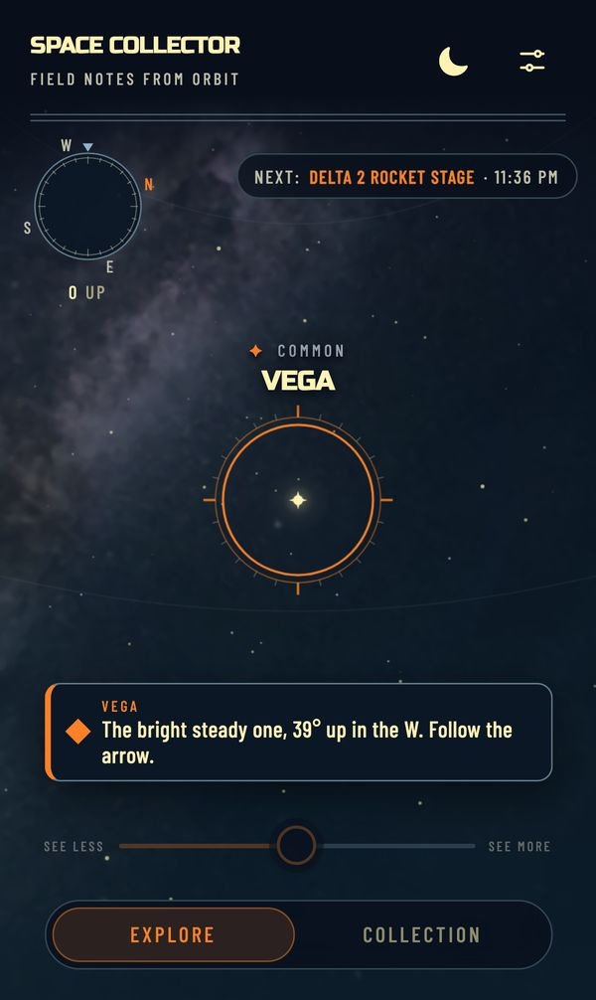
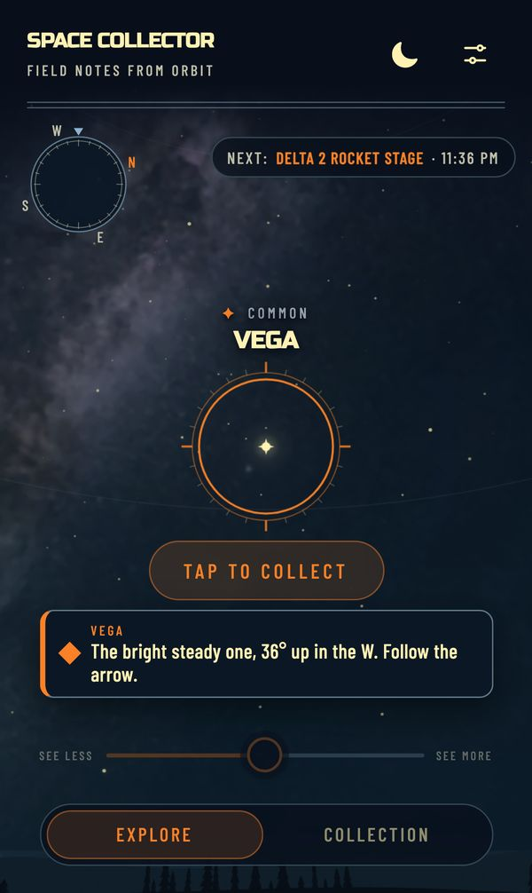
2Locked patches look like patches, with your progress
Locked patches were dim dashed circles with codes like "AG", "M10" and "3/3" that don't mean anything until you tap. After: each one looks like the patch before it's stitched. The name is marked out round the top and the icon is drawn as an outline. For anything that counts, the border is stitched part-way round with "1 / 10" underneath, so the wall shows what's close. The detail card adds a progress bar.
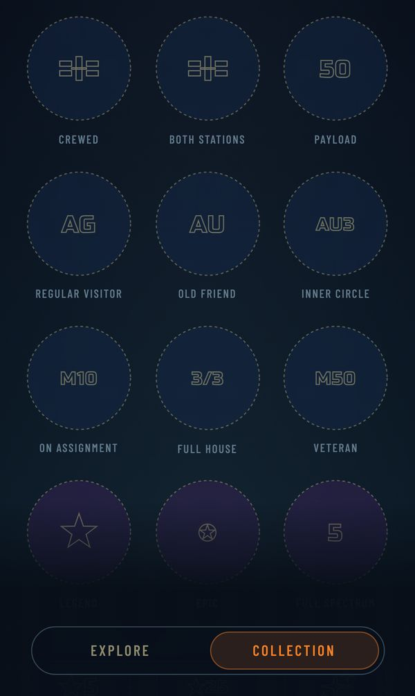
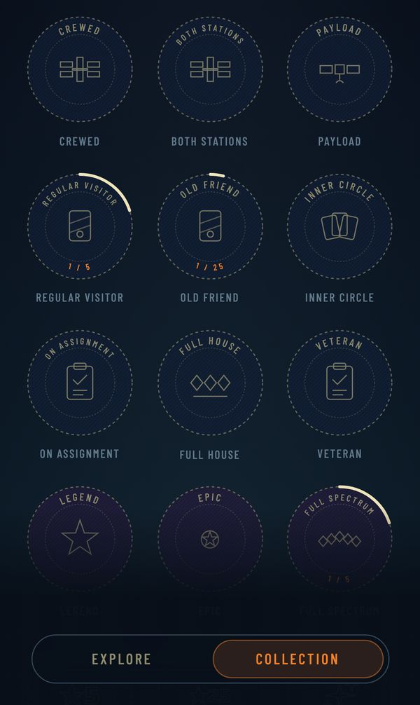
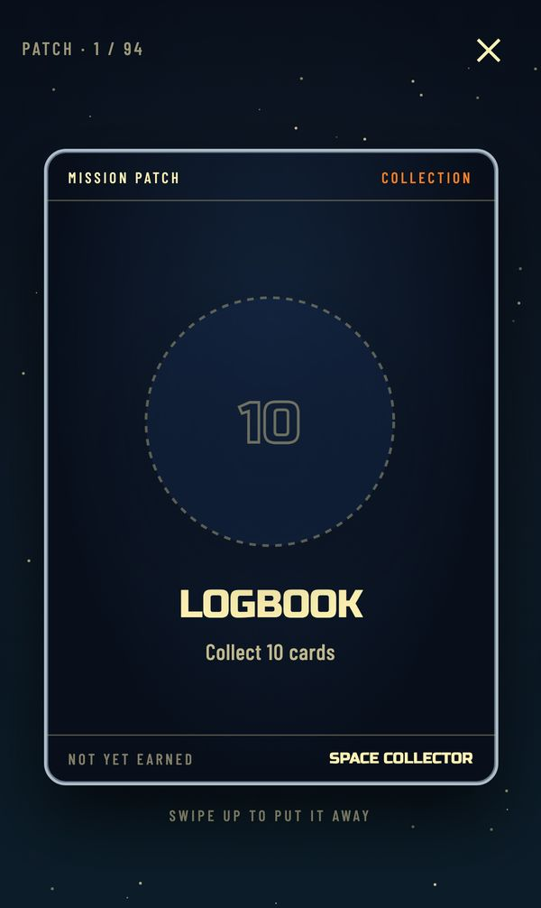
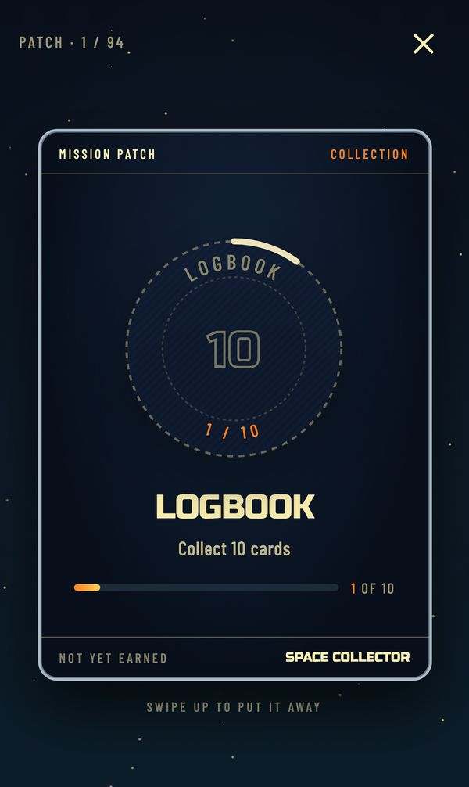
3One thing at a time after a catch
Straight after your first catch, four things landed at once: the patch coin (on top of the View card button), a "Milestone · First item collected" toast that repeats the First Light patch, the "Tap the radar" tip, and, during the reveal, the tour's hint toast still sitting under the card. After:
- The coins go first and toasts wait.
- No milestone toast at 1, 10, 25, 50 or 100 cards, because those already earn a patch.
- The radar tip waits until the coins and toasts are done.
- Toasts step aside while a card is being revealed.
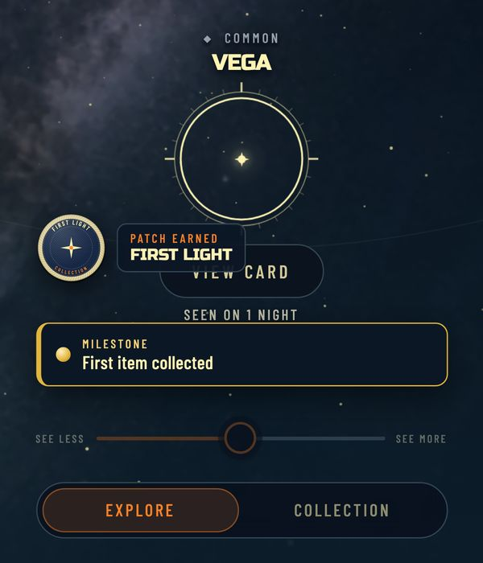
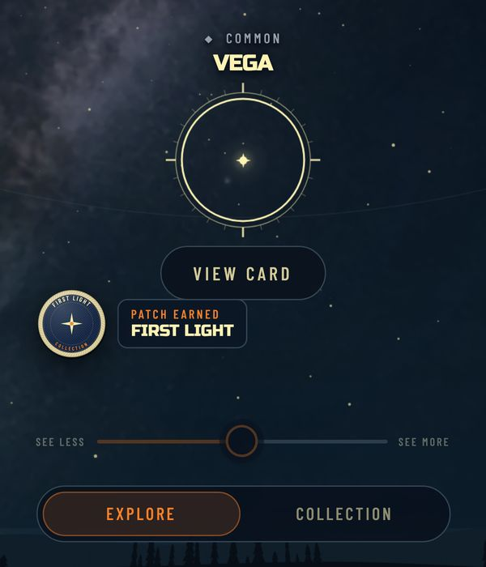
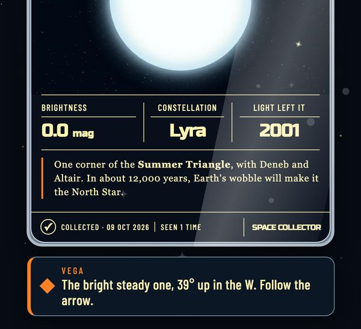
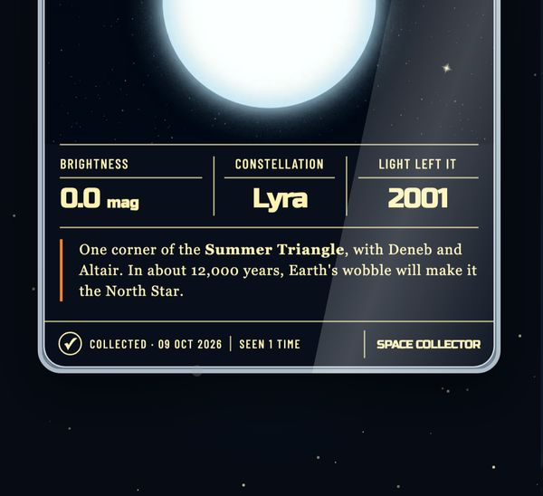
4"0 UP" under the compass
Under the compass it said "0 UP" while I was looking 35° up, so it reads like an angle. It's actually the number of satellites lit right now, and it disagrees with the "Now · 91" in Up in the Sky. After: it says "2 passing" when satellites are lit and disappears at zero. The Next pass chip already covers the quiet moments.
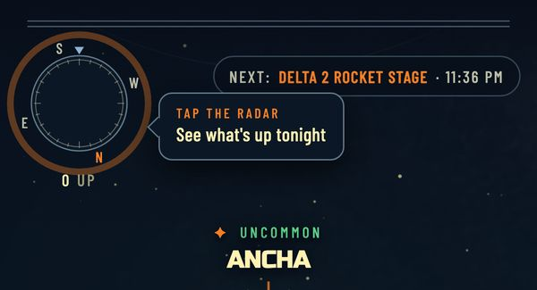
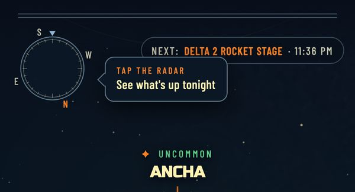
5Welcome card says two different things
Under the card it says "Swipe away", but the card's own footer still says "Swipe up to begin". After: the footer says Swipe away to begin.
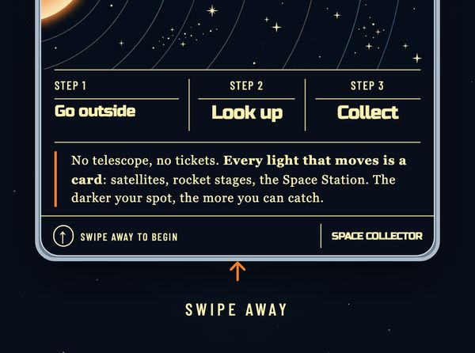
6Same-name cards side by side
Rocket stages often share a name, so you get two identical "Delta 1 Rocket Stage" tiles next to each other. After: when a name appears more than once in the list, each tile gets a small line with the launch year and catalogue number, e.g. 1969 · #3767.
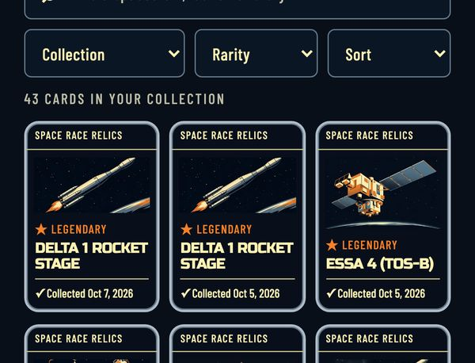
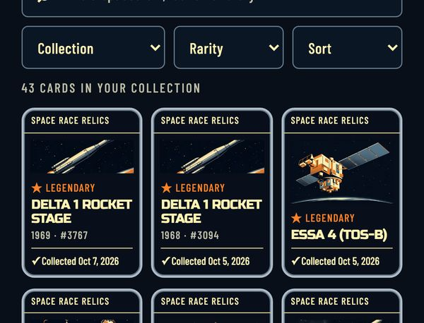
7Picture icons instead of text codes on patches
About two dozen patches had a text code where the picture goes: "M10", "3/3", "≤90", "4W", "Ag", "Au", "×2", "21". After: each has a stitched icon in the same style as the rest. A clipboard with a tick for missions, three diamonds for Full House, a calendar with a flame for streaks, silver and gold cards, a sunset for Early Bird, a sunrise for Dawn Patrol, an old rocket for Cold War, an hourglass for Time Traveller, and so on. Number patches (10, 25, 50…) keep their numbers, which read fine.
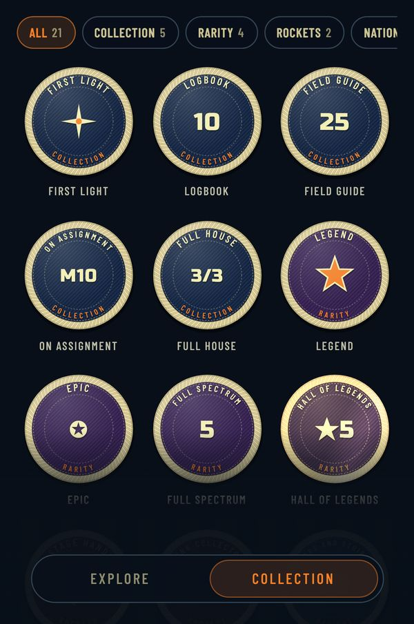
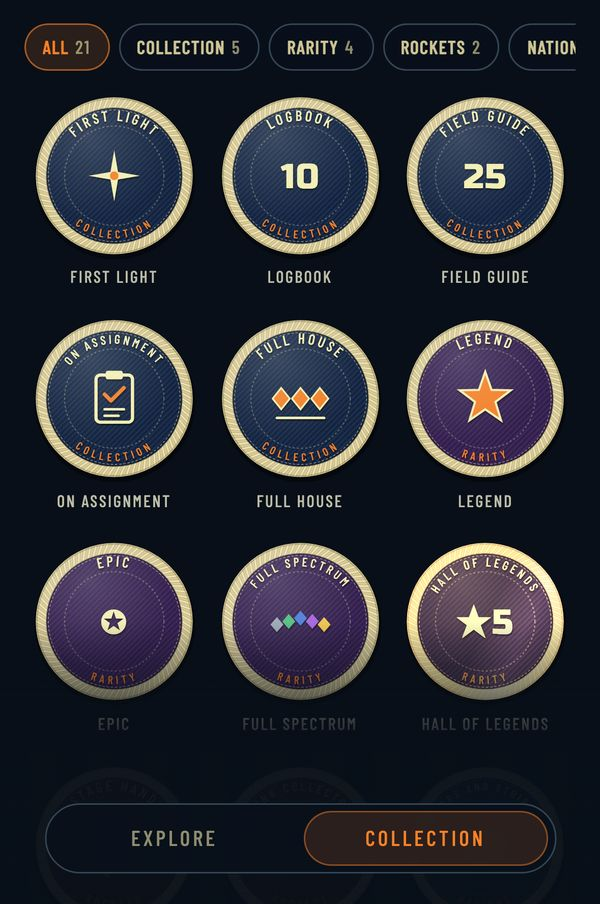
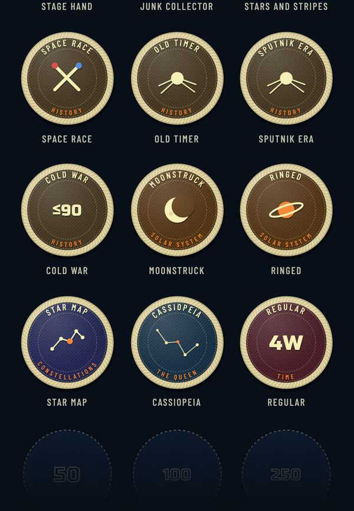
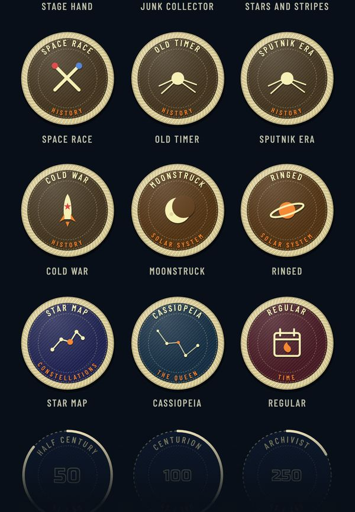
Playability: rough edges
Things that got in the way of playing, each with what I'd do. These aren't built yet; tell me which to do.
8First-night missions a beginner can actually finish
My first night's three missions were "Spot a piece of space debris", "Find something launched before 1980" and "Catch a rocket stage". All three need a faint, specific object and an experienced eye, and the finish page showed 0 / 3 right after my first catch. Missions are picked at random per night, so a new player's first impression of missions can be impossible. Recommend: a player's first night always gets a fixed starter set: "Collect your first card" (already ticked by the tour), "Catch a satellite" and "Collect a planet or the Moon". After that, the normal rotation.
9Discover opens on a wall of blurred legendaries
Discover sorts by rarity, so the first screens are all uncollected Legendary cards (Space Station, Hubble, Vanguard…), every one blurred. It reads as "locked content", not "things you could go and get". Recommend: lead with what's up from where you are this week (the tonight worker already knows), then the rest. Add a "Catchable from here" filter too.
10A one-card collection looks empty
After the tour, Mine is one tile in a three-wide grid and a lot of blank screen. Recommend: until you have about 9 cards, fill the rest of the grid with face-down "Up tonight" slots for your next likely catches, with times ("Delta 2 Rocket Stage · 11:36 pm"). Tapping one sets the reminder. It turns the empty space into the next thing to do.
11The hint says the same thing twice while you hunt
While steering to the tour target there's the guide pill ("Vega · Turn left · 39° up W") and, just below it, a toast saying "The bright steady one, 39° up in the W. Follow the arrow." The toast also stays up after you've lined it up. Recommend: drop the toast once the guide pill is showing, and when you're lined up, switch the pill text to "Tap the circle".
12Tonight's "Visible" stat is confusing
At 11:16 pm, Up in the Sky → Tonight said VISIBLE 3:02 AM–6:53 AM while also listing passes at 11:36 pm, 2:11 am and 3:02 am. The stat is the span the chart counts as having lit satellites up, and fainter passes in the list fall outside it. So it reads like "nothing's visible until 3 am" right above a list that says otherwise. Recommend: rename it "Best window", or show "Dark until 6:53 AM" there and keep the busiest time in its own box.
13"1-week streak 🔥" on day one
The rank card shows a 1-week streak with a flame after your very first sighting. A flame you didn't work for doesn't mean much. Recommend: show "Week 1" (no flame) until week 2, then "2-week streak 🔥".
Game mechanics: is it fun?
Numbers from the catalogue (4,098 single-object cards plus 7 fleets, 18 constellations and the bright stars and planets) and the XP rules in js/progress.js.
Short version: the core loop is genuinely good. Steering the circle onto a real light, the lock-on and the sealed-card reveal is a moment no other app gives you, and the art makes cards feel worth having. The problems are the economy around it:
- Rarity measures age, not how hard something is to see.
- Legendary XP makes ranks fly by.
- A couple of patches can't be earned at all.
- There's little to do on a night with nothing new overhead.
Rarity: what it measures today
| Tier | Cards | Share | Rule | Typical brightness |
|---|---|---|---|---|
| Common | 978 | 24% | launched 2010+ | mag 4.5 |
| Uncommon | 1,191 | 29% | 1992–2009 | mag 3.4 |
| Rare | 1,033 | 25% | 1980–1991 | mag 3.6 |
| Epic | 622 | 15% | 1970s, station visitors | mag 3.7 |
| Legendary | 274 | 7% | pre-1970, ISS, Tiangong, Hubble | mag 4.7 |
Two problems. First, about one card in fourteen is Legendary, and they pass just as often as anything else, so a keen player sees one most clear nights. Legendary stops feeling legendary. Second, the most famous Legendaries are the easiest things in the sky: the ISS is the brightest satellite there is and passes most weeks. Meanwhile a faint binocular-only 2015 cubesat is Common. Rarity should mean "hard to get".
XP pace
An average new card is worth about 41 XP (10/20/40/80/150 by tier, weighted by the mix above). A typical session is about 6 new cards, one mission and a few repeats, so roughly 300 XP.
| Rank | XP | Today (casual, 2 nights a week) | With the change below |
|---|---|---|---|
| Spotter | 200 | first night | first night |
| Tracker | 600 | night 2 | night 3 |
| Navigator | 1,500 | night 5 (week 3) | night 7 (week 4) |
| Flight Controller | 4,000 | night 13 (week 7) | night 19 (week 10) |
| Mission Control | 10,000 | night 32 (month 4) | night 48 (month 6) |
My three-week test collection of 43 older cards was already Flight Controller. The top rank arrives about when the new cards from one backyard start running out, which leaves nothing to chase.
19Make rarity mean "hard to catch"
Score each object on what makes it hard:
- Brightness: binocular-only is harder.
- How often it passes your latitude.
- Whether it's sunlit at night.
- A smaller bonus for age, so Space Race objects still lean rare.
Then cut the tiers at 40/30/18/9/3%. The ISS, Tiangong and Hubble keep a special "Icon" badge and gold frame, but sit at Rare rather than Legendary. It's a catalogue rebuild (scripts/build-catalog.mjs): no code changes in the app, but it changes existing players' card tiers.
20Flatten tier XP: 10 / 15 / 25 / 40 / 60
The jump from 10 XP for a Common to 150 for a Legendary is 15×, so ranks are mostly a count of how many old rocket stages passed over. Flattening the tiers (a mission stays 50, a constellation stays 200) gives the pace in the right-hand column of the table: Mission Control in about six months of casual play instead of four. Existing players would see their XP drop, so I'd keep anyone's current rank as a floor.
21Fix the patches that can't be earned
Some patches can't be earned, or overlap:
- Atlas asks for 25 constellations, but there are only 18, so it's impossible. Make it "Complete all 18".
- Star Map (complete a constellation) now always lands together with that constellation's own patch, so you get two coins for one event. Fold it into the first constellation patch, or retire it.
- The Catalogue (1,000 cards) is unlikely from one place in under a couple of years. Fine as a legend goal, but I'd show it as "Legendary goal" so nobody feels they're failing.
- Zodiac (all 12, including Sagittarius's 24 stars down to magnitude 5) needs a dark site and a full year of seasons. It should be Holo, not just Gold.
22Something to do on a quiet night
Once you own everything bright overhead, a night without a new pass gives XP only for repeats (5 XP). Card levels (silver at 5 nights, gold at 25) reward coming back, but they're invisible until you open a card. Recommend:
- Show "Seen on 4 of 5 nights · 1 more for Silver" on the target circle when you aim at something you own.
- Add a nightly "Tonight's sky challenge": find a specific star by a hint, or catch two passes within ten minutes.
Both use mechanics that already exist.
23Missions that match the sky
Missions are dealt by date, the same three for everyone, whatever's overhead. "Catch a rocket stage" on a night with no bright stage passes, or "Spot something Soviet" from Australia, can't be done. Recommend: when dealing a night's missions, skip any the tonight worker says have no qualifying pass. Then a mission is always a real thing you could go and do, and the Tonight list can mark the pass that completes it.
Is it fun?
Yes, in the first week especially: every night has a dozen new things, the tour lands you a card in under a minute, and the reveal plus the patch coins feel great. The risk is weeks 3 to 8. Ranks have flown past, Legendaries are routine, and the new cards in reach thin out. Items 19, 20 and 22 are aimed squarely at that stretch, and item 14 (pass alerts) is what gets people outside in the first place. If I could only do two, I'd do 19 and 14.
Bigger ideas
Features I think would make it better, roughly in order of how much difference I'd expect.
14Pass alerts that actually reach you
The game lives or dies on "go outside at 9:41 pm". The alarm is a calendar download right now. Home-screen web apps on iOS can get real push notifications (iOS 16.4+). A "Bright pass in 10 minutes · 62° up in the SW" push is the single biggest retention lever I can see.
15Weekly recap card
Every Monday, a shareable card: what you caught this week, your rarest find, your streak, and the next week's highlight (a meteor shower, a bright ISS run). It gives a reason to come back on a cloudy week and something to post.
16Point at a light, get its name
The most common real-world question is "what's that bright one?" A one-tap "What's this?" mode that names whatever is nearest the circle, even things you've already collected or can't collect (a plane, Sirius, Jupiter), makes the app useful every night, not just when there's a pass.
17Album rewards
Albums go Bronze, Silver, Gold, but gold only changes the album's border. Make an album's gold its own patch (with gold foil), and give each album a set-specific card back as a reward. It gives the long tail a goal.
18Photo capture
You already have the camera view in Testing tools. When you catch something with the camera on, save a photo of the real sky with the card's name, a trail line and the time stamped on it, and attach it to the card's back. Collectors love proof.